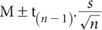
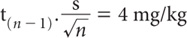
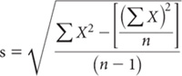
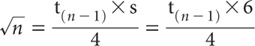
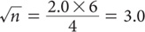
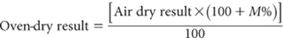
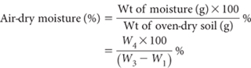
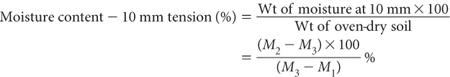
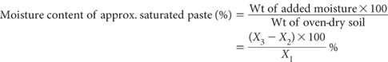

This chapter combines and extends former Chapters 1 and 2 of Rayment and Higginson (1992). Superseded Chapter 1 from that Handbook dealt with sampling and sample preparation, while Chapter 2 dealt with soil moisture contents. Topics sequentially described are soil sampling, sample transport, laboratory preparation and disposal of samples. In addition, there are four methods for soil moisture content, coded as 2A1, 2B1, 2C1, and 2D1. Summary details of these are provided in Table 2.1.
Soil sampling is not the main focus of this book but must never be overlooked. All care and attention in the laboratory is devalued if the sample does not truly represent what was intended.
Soils are formed and are continually modified by the actions over time of climate, topography (or relief), vegetation, man, and other biota acting upon parent rocks and on the soil itself. Soils vary in their appearance and in their ability to supply nutrients, water, air and anchorage for plant roots. While individual soils exhibit unique characteristics, they also have characteristics in common. For example, all soils comprise solids (minerals and OM), water and air.
Table 2.1. Summary detaÕs of soÕ moisture methods in this chapter.
Code |
Technology |
Test method |
Notes |
2A1 |
Percentage calculation of air-dry moisture content relative to oven-dry (105°C) weight. |
Air-dry moisture content |
Mostly used to convert results from an air-dry weight to an oven-dry weight. |
2B1 |
Percentage calculation of as-received moisture content relative to oven-dry (105°C) weight. |
As received moisture content |
Mostly used to convert results from an as-received weight to an oven-dry weight. |
2C1 |
Wetting-up procedure and calculation to obtain moisture content at 10 mm tension. |
Moisture content – 10 mm tension |
Used to obtain a repeatable estimate of the quantity of water necessary to prepare saturated soil pastes. |
2D1 |
Percentage calculation of water contained in saturated pastes at the point of visual saturation. |
Moisture content – approximate saturation paste |
Used to obtain a numeric measure of the amount of water contained in soil-saturated pastes prepared visually. |
The organic fraction includes living plants, micro-organisms and animals, and the remains of these in various stages of decay. Accordingly, they are not sterile, unless they have been chemically fumigated, subjected to sustained high temperatures (e.g. ≥105°C for several hours), autoclaved, or γ-irradiated at from 10 kGy to >70 kGy, the latter to ensure the death of radio-resistant bacteria (Bowen and Rovira 1961; McNamara et al. 2003). Mineral matter consists of particles of sand, silt and clay, formed from chemical and physical weathering of parent rock, minerals, ash, coral, shell and bone. Pore spaces between individual soil particles or aggregates (clusters) of soil particles contain water, air, plant roots and the like. The amounts and kinds of OM, mineral particles, plant nutrients and pore spaces vary both within and between soils.
Prominent amongst reasons for natural, within-soil variation is the soil profile, which commonly stratifies abruptly or gradually into discernable horizons. A hypothetical example is shown and briefly described horizon by horizon in Figure 2.1. Refer to Isbell et al. (1997) and McKenzie et al. (1999) for examples of major soils from Australia and their distribution, and to Fitzpatrick et al. (1999) for associations between soil morphological characteristics and soil fertility.
Soil sampling strategies need to take account of the existence of soil horizons and to the reality that cultivation, cropping, grazing, fertilisation, waste disposal and other land-management activities affect soil chemical, physical and biological properties significantly. Some information on sampling is included for convenience. For more information, readers are referred to detailed reviews on soil sampling for soil chemical analysis, including sample handling by Brown (1993, 1999). See also Etchevers (1986), Anon (1992) and Rayment (1993).
Figure 2.1. Hypothetical soil profile showing principal horizons, with brief explanations.
Beattie and Gunn (1988) provide details on the collection of samples associated with soil and land-use surveys in Australia. Similar strategies apply across Australasia. When tests for micro-nutrients are proposed for inclusion in the analytical suite of soil chemical methods, uncontaminated, heavy duty polyethylene bags are preferred to those made from cloth, which were popular in earlier times. When there are no compelling reasons to do otherwise, it is convenient for the computerization of records to sample common depths such as 0–10, 10–20, 20–30, 50–60, 80–90, 110–120, 140–150, and 170–180 cm (Beattie and Gunn 1988). Sampling depths, however, may need to be varied to best achieve survey objectives and to reflect soil variability adequately. Deeper sampling may be needed on occasions, such as for tracking the movement of nitrates, and to confirm or eliminate the likelihood of sulfides associated with ASS.
Sampling protocols relevant to the crop, soil test/s, and interpretative criteria should be followed. For example, it is common to sample soils at either 0–7.5 or 0–10 cm for the assessment of the P and K fertiliser requirements of field crops and pastures. The usual soil sampling depth for vegetables and for fruit tree crops is 0–15 cm, while a 0–25cm sample is commonly used diagnostically for sugar cane. Deep sampling down to 60–100 cm may be necessary to better assess soil salinity, acidity, S-status, and mineral-N status. Since soil fertility varies down the profile, the sampling depth must be recorded. As tests such as extractable P typically decline with increasing depth, a sampling plan based on a 0–7.5 cm depth may suggest the site is more fertile than might be perceived by sampling the same field at 0–10 cm depth. Swelling of surface soils following recent cultivation and/or due to wetting also affects the accuracy and apparent bulk density of so-called fixed soil sampling depths.
As soil fertility can vary widely even over short distances, the area to be assessed must be divided into units of acceptable variability. This usually involves exclusion of small atypical areas such as fertiliser dumps, eroded gulleys, burn areas, etc. Sampling soon after applications of fertilisers and soil amendments should also be avoided. Oil used for lubricating soil sampling tubes and other equipment can be a direct source of contamination, especially during analyses for OC (Dowling et al. 1985).
Soil sampling errors can be minimised by using sampling equipment/sample containers known to be free of relevant contamination. An appropriate number of sub-samples is also essential. In practice, this usually involves making a composite from around 15 to 30 sub-samples from the area in question. One method of calculating the preferred number of sub-samples follows (Rayment 1985; Rayment and Higginson 1992).
Soil variability can be expressed by a 95% confidence interval:

where
M = mean value from n sub-samples
t(n – 1) = Student t value for (n–1) degrees of freedom at the 5% level of probability
s = standard deviation for n sub-samples
Proceed as follows:
1 Set value for the acceptable confidence interval; e.g. ± 4 mg/kg, i.e.

2 Estimate from a separate study (or accept from past experience) an expected value for the standard deviation (s). For example, analyse 10 sub-samples and use the formula:

3 Find the value of n by substitution; e.g. assume the estimate of s is 6 mg/kg, so by substitution,

Taking the value of t(n – 1) as 2.0

giving n = 9
4 For greater accuracy, consult statistical tables for the correct value of t(n – 1) for n = 9 (in this case t = 2.31) and recalculate a new value for n. Continue until a constant result for n is obtained.
5 Recalculate for each element/soil property to be tested and come to an appropriate compromise if multiple tests from the one sampling are intended.
Laboratories that accept unprocessed or non-sterile samples from other countries typically require prior accreditation from quarantine authorities, and need to obtain permits for introduction and subsequent handling of risky materials. In Australia, for example, many intrastate and interstate biosecurity restrictions and conditions apply, some prohibiting the movement or entry of soil samples. Important examples of biosecurity regulations for sample transportation and disposal on a state-by-state basis are provided by Rayment (2006).
IMPORTANT: Laboratory managers and staff should ensure, for bŠsecurity reasons, that their sample acceptance and sample disposal procedures are lawful.
In addition to attention to biosecurity requirements, soil samples should be kept cool or cold between field sampling and receipt at the laboratory (see Note 1 at end of this chapter). This is to minimise biological transformations and other chemical reactions that may result in changes in components of soil chemical fertility, such as the concentration of nitrate-N. Alternatively, soils may be air-dried remote from the laboratory (max. 40–45°C), when an estimate of field moisture content is not required.
After breaking up any large cores or peds on a clean surface, selectively remove by hand or by sieving any ‘rock fragments’ including any obvious concretions. When numeric data are required on >2 mm fractions, determine the weight percentage (oven-dry basis) of the >75 mm and 20–75 mm fractions, relative to total sample weight. Retain a representative portion of the soil in a sealed polyethylene bag or ‘moisture container’ if an estimate of field moisture content is required.
If the sample size remains too large, reduce by ‘coning and quartering’, or by a sample divider. Next (if specified in the method/s to be undertaken) spread the soil samples on drying trays and air-dry at ≤40–45°C. If expedited by applying a forced draft, the air supply should be naturally clean or otherwise filtered (or scrubbed) to remove dust particles and/or chemical vapours.
When the soil is thoroughly air-dry, mix, roll, and/or grind, using equipment similar to examples shown in Figure 1.1 of Chapter 1 (also see Note 2 at end of this chapter). Retain the <2 mm fraction, preferably in an airtight plastic or inert container, for subsequent laboratory analyses. When required, determine the weight percentage (oven-dry basis) of the residual >2–20 mm size fraction. The coarse fractions, which can be discarded, should not slake in either deionised water or in 10% sodium tripolyphosphate (Na5P3O7) dispersant.
When grinding to particle sizes <2 mm is specified (e.g. <0.5 mm) for one or more of the proposed tests, take a truly representative sub-sample (usually around 30 g) from the <2 mm portion. Pass the entire sub-sample through the required mill and store in a small, contamination-free, air-tight container. These samples must be well mixed prior to soil analysis, especially when there are visual signs of segregation. Also, follow grinding specifications as surface area and results can be affected.
Finally, every laboratory should develop and follow clear protocols on the retention of samples following analysis and on how samples should be discarded. As earlier indicated, all non-sterile samples should only be discarded in accord with biosecurity regulations. Similar regulations may also apply to the safe disposal of soil extract solutions, filter papers, and other laboratory wastes.
Following a review, Etchevers (1986) concluded that temperature-controlled air-drying of soils is appropriate for routine testing where speed and consistency are necessary. Australian practice has been to dry at about 40°C (Rayment and Higginson 1992), whereas drying temperatures of from 30–35°C emerged in New Zealand (Metson 1961).
Air drying invalidates results for nitrite in soils (Keeney and Nelson 1982) and can affect – in variable directions – the results for other tests (e.g. Nelson 1977; Bartlett and James 1980; Shuman 1980; Leggett and Argyle 1983; Menzies et al. 1991; Rechcigl et al. 1992). Tests such as the pH of a hydrogen peroxide extract (Ford and Calvert 1970, Method 4E1) specify field-moist soil. Also, incubation of re-wetted air-dry soils for periods longer than one day are reported to cause an artificial elevation of ionic strength of soil solutions, through mineralisation of OM in some surface soils (Menzies and Bell 1988). Expected changes in analytical values as a consequence of air-drying – or freeze-drying, which has given similar results (e.g. Harris and Safford 1992) – are summarised in Table 2.2, with more details provided in later chapters. Sample storage may also affect results of tests such as phosphate-extractable S (see Chapter 10).
The moisture status of soil test results was introduced in Chapter 1. It is often overlooked or ignored that soils do contain sometimes quite significant quantities of moisture, following the attainment of constant weight at drying temperatures of ≈30–40°C. For example, soils high in OM and/or expansible 2:1 phyllosilicate minerals in the smectite family (montmorillonite, beidellite, saponite, nontronite, and several less common examples) can retain over 10% of their oven-dry weight as moisture, when ‘dried’ at relatively low temperatures. In contrast, siliceous sands low in OM may retain as little as 1–2% moisture, following drying at 40°C. Many of the methods described in this book specify corrections to account for residual soil moisture.
Table 2.2. Expected chemical changes in analytical results due to air-drying of soÕ (sourced from Etchevers 1986, Rayment 1993 and Brown 1999).
Test |
Response to air drying |
ammonium-N |
increases or decreases possible. |
iron |
if from an inundated area, concentrations decrease. |
manganese |
if from an inundated area, concentrations decrease. if soil was aerobic, concentrations increase. |
nitrate-N |
probable increase. |
nitrite-N |
decreases or lost. |
potassium |
may be liberated to increase concentration or fixed, resulting in a lower concentration. Unaffected by subsequent lengthy air-dry storage (Sparks 1987). |
soil pH |
increases or decreases possible. Expect increased acidity when soils containing relatively high concentrations of S– are oxidised while drying at lowish temperatures in natural air. |
sulfate-S |
increase expected when soils contain organic S and/or sulfide minerals (for example, ASS). |
Method codes for air-dry moisture content, as received moisture content, moisture content – 10 mm tension, and moisture content – approximate saturation paste (Methods 2A1, 2B1, 2C1, and 2D1, respectively), are unchanged from those in Rayment and Higginson (1992).
Use this method when it is necessary to correct soil chemical results based on air-dry samples to an oven-dry basis.
When the air-dry moisture content (M%) is known, the correction from air-dry result to oven-dry result is as follows:

Confirm the weight of each clean, dry, weighing container (W1 g). Weigh accurately from 10 to 50 g air-dry soil (<2 mm) into each container and record weight (W2 g). With lids removed, dry at 105°C to constant weight then quickly transfer to a dry desiccator (no desiccant) to cool. When cool, replace relevant lids and reweigh (W3 g) to determine weight of moisture [(W2 – W1) – (W3 – W1)] = W4 g.
Discard soil on completion in a responsible manner.

Report as air-dry moisture content (%).
When there is a need to know the moisture status of soils received at the laboratory, take a representative sub-sample and proceed as for Method 2A1.
Report as ‘as received’ moisture content (%).
The subjectivity of visual estimation of a saturated soil paste can be overcome by wetting-up the sample on a capillary saturation table (Longenecker and Lyerly 1964). The procedure given is a modification of that technique (Beatty and Loveday 1974).
The moisture content at 10 mm tension is obtained by calculation, following equilibration of air-dry soil (<2 mm) on a blotting-paper suction plate set at 10 mm water tension.
Blotting paper tension table
A base, constructed from flat, clear acrylic plastic, as described by Beatty and Loveday (1974), is shown in Figure 2.2. The surface slots are cut approximately 60 mm apart; leg height is not critical – up to 300 mm can be used.
Cut strips of blotting paper to fit between the slots in the acrylic plate. Fold these strips so as to pass up from the base, across the top of the acrylic plate, down through the next slot to the base, up through the next slot, etc. Place blotting paper the same size as the flat plate on top of the blotting paper strips and put the apparatus in a container fitted with a lid and an external constant water level device. A separate internal water level indicator is desirable to allow accurate calibration of water height. This should be 10 mm below the top of the acrylic plate (base of soil sample). Wet the strips of blotting paper sheet to equilibrium by capillarity from water added to the container, or by watering the strips and sheet and allowing them to drain to the free water surface.
Place a numbered set of rings, e.g. 45 mm ID × 10 mm ht. brass, on individual filter papers (Whatman No. 1; dia larger than the rings) on the blotting-paper tension table. Adjust water level (deionised water) to 10 mm below the top surface of the tension table.
Using a standard scoop (16 cm3 for the ring described) place a sub-sample of each air-dry, ground (<2 mm) soil into the rings so that the levelled-off height does not exceed 10 mm. A level surface of soil and good soil-to-paper contact are necessary for reproducible results.
Figure 2.2. Acrylic base for blotting paper; portion of tension table for saturation extracts.
Replace the lid of the container to minimise evaporation and allow soils to wet by capillarity for 48 hours (h). During this period the water level must be accurately maintained; check after about 24 h; add deionised water as necessary if an automatic water level device is not available.
Remove individual samples of soil by sliding a broad spatula of thin cross-section between the blotting and filter paper. Remove the ring and invert the filter paper over a previously weighed dish and lid (M1). Do not wipe the filter paper on the side of the dish as this will give a high apparent water content. Weigh the wet soils plus dishes with lids to ±0.001 g (M2). Remove lids and dry soils at 105°C to constant weight. Remove from oven, cool in a desiccator, then quickly replace lids on correct containers. Weigh dry soil plus dish and lids (M3).

Report result as moisture content – 10 mm tension (%).
Many soil saturation pastes are based on visual estimations of the appropriate moisture content (Richards 1954). Saturation can normally be assumed when the soil paste glistens as it reflects light, flows slightly when tipped, and slides freely and cleanly from a spatula, except when soils contain much clay.
This method is used to determine the percentage moisture (oven-dry basis) at the point of visual saturation. It is applicable to air-dry soils ground to <2 mm, when a 10 mm tension table and moisture rings are unavailable. Once prepared, the saturation extract is removed for subsequent analyses.
Initially determine the air-dry moisture content of each sample by Method 2A1. Next weigh the equivalent of X1 g oven-dry soil (<2 mm) into a container of known weight; weight of container + soil = X2 g. The preferred minimum weight of oven-dry soil equivalent is 100 g. A sample weight of 250 g, however, is convenient to handle and provides sufficient saturation extract for most purposes.
Prepare the saturated paste by slowly adding deionised water to the soil while stirring with a spatula; use a separate spatula for each soil to avoid cross-contamination and soil loss. Tap the container on the bench from time to time to consolidate the soil/water mixture. Note that there are difficulties in preparing ideal saturation pastes with some soils. For example, to minimise puddling in soils of high clay content, water should be added slowly with a minimum of stirring, especially in the early stages. Dry, peaty soils, especially if coarse-textured or woody, usually require overnight wetting-up, followed by a second wetting-up and remixing (SSIR 1984).
Allow to stand overnight. Saturation can be assumed if free water does not collect on the surface and the paste does not stiffen markedly or lose its glistening appearance on standing. If either of these conditions occurs, add more pre-weighed dry soil or water, respectively, and remix until an appropriate saturation paste is obtained. Record the weight of container + soil + added moisture = X3 g. Make necessary adjustments to X1, X2 and X3 for those samples that required further additions of air-dry soil to obtain appropriate saturated pastes.

Report result as moisture content of approximate saturated paste (%).
1. There is ample evidence that storage of moist soil below 4°C for days to a few weeks – or at freezing temperatures for longer periods – minimises biologically induced transformations in nutrient cations and anions. As air-drying brings soils towards a general equilibrium (Etchevers 1986), changes during storage, not due to contamination from the storage container, are likely to be small and slow.
2. Piper (1944) recommended crushing rather than grinding but accepted the need to grind heavy-clay soils. The New Zealand designed Rukuhia roller-mill, fitted with a stainless-steel screen (Waters and Sweetman 1955; Metson 1961), is locally popular but performs poorly on many hard-setting Australian soils. Consequently, corn-crackers and stainless steel hammer mills have been successfully adapted for such soils. These mills are efficient, although they have the potential to artificially increase the surface area exposed to subsequent chemical reactions (Etchevers 1986). Unlike the Rukuhia soil grinder, grinding and hammer mills require prior removal of gravels and concretions.
Anon (1992) Soil Survey Laboratory Methods and Procedures for Collecting Soil Samples. Soil Survey Investigations Report No. 1. Soil Conservation Service, US Department of Agriculture, Washington DC.
Bartlett RJ and James BR (1980) Studying dried, stored, soil samples – some pitfalls. Soil Science Society of America Journal 44, 721–724.
Beattie JA and Gunn RH (1988) Field operations of soil and land resource surveys. In Australian Soil and Land Survey Handbook – Guidelines for Conducting Surveys. (Eds RH Gunn, JA Beattie, RE Reid and RHM van de Graaff) pp. 113–134. Inkata Press, Melbourne.
Beatty HJ and Loveday J (1974) Soluble cations and anions. In Methods for Soil Analysis of Irrigated Soils. (Ed J. Loveday) pp. 108–117. Technical Communication No. 54. Commonwealth Agricultural Bureaux, England.
Bowen GD and Rovira AD (1961) Plant growth in irradiated soil. Nature 191 (26 August), 936–937.
Brown AJ (1993) A review of soil sampling for chemical analysis. Australian Journal of Experimental Agriculture 33, 983–1006.
Brown AJ (1999) Soil sampling and sample handling for chemical analysis. In Soil Analysis: An Interpretation Manual. (Eds KI Peverill, LA Sparrow and DJ Reuter) pp.35–53. CSIRO Publishing, Melbourne.
Dowling AJ, Shaw RJ and Berthelsen S (1985) The influence on soil properties of mould oil used in sample cores. Australian Journal of Soil Research 23, 655–659.
Etchevers JD (1986) Chemical soil analysis – the reason for their drawbacks. In Proceedings of an International Workshop on the Laboratory Methods and Data Exchange Programme. (Ed LK Pleijsier) pp. 16–34. Technical Paper, International Soil Reference and Information Centre, Labex Secretariat, The Netherlands.
Fitzpatrick RW, McKenzie N and Maschmedt DJ (1999) Soil morphological indicators and their importance to soil fertility. In Soil Analysis: An Interpretation Manual. (Eds KI Peverill, LA Sparrow and DJ Reuter) pp. 55–69. CSIRO Publishing, Melbourne.
Ford HW and Calvert DV (1970) A method for estimating the acid sulphate potential of Florida soils. Soil and Crop Science Society of Florida – Proceedings 30, 304–307.
Harris MM and Safford LO (1992) A rapid technique for drying organic soil horizons using a microwave oven. Soil Science 154, 420–425.
Isbell RF, McDonald WS and Ashton LJ (1997) Concepts and Rationale of the Australian Soil Classification. ACLEP, CSIRO, Australia.
Keeney DR and Nelson DW (1982) Nitrogen – inorganic forms. In Methods of Soil Analysis. Part 2 – Chemical and Microbiological Properties, 2nd Edn. (Ed AL Page) Agronomy Number 9 (Part 2) pp. 643–698. American Society of Agronomy Inc. and Soil Science Society of America Inc., Madison, Wisconsin, USA.
Leggett GE and Argyle DP (1983) The DTPA-extractable iron, manganese, copper, and zinc from neutral and calcareous soils dried under different conditions. Soil Science Society of America Journal 45, 518–522.
Longenecker DE and Lyerly PJ (1964) Making soil pastes for salinity analysis: a reproducible capillary procedure. Soil Science 97, 268–275.
McKenzie N, Isbell RF, Brown K and Jacquier D (1999) Major soils used for agriculture in Australia. In Soil Analysis: An Interpretation Manual. (Eds KI Peverill, LA Sparrow and DJ Reuter) pp.71–94. CSIRO Publishing, Melbourne.
McNamara NP, Black HIJ, Beresford NA and Parekh NR (2003) Effects of acute gamma irradiation on chemical, physical and biological properties of soils. Applied Soil Ecology 24, 117–132.
Menzies NW and Bell LC (1988) Evaluation of the influence of sample preparation and extraction technique on soil solution composition. Australian Journal of Soil Research 26, 451–464.
Menzies NW, Bell LC and Edwards DG (1991) Effects of incubation time and filtration technique on soil solution composition with particular reference to inorganic and organically complexed Al. Australian Journal of Soil Research 29, 223–238.
Metson AJ (1961) The preparation of soil samples for chemical analysis. In Methods for Chemical Analysis For Soil Survey Samples. NZ Department of Science and Industrial Research, Soil Bureau Bulletin 12, pp.13–17.
Nelson LE (1977) Changes in water soluble Mn due to soil sample preparation and storage. Communications in Soil Science and Plant Analysis 8, 479–487.
Piper CS (1944) Soil and Plant Analysis. The University of Adelaide, Adelaide, Australia.
Rayment GE (1985) Calibration and interpretation of soil chemical analyses. In Identification of Soils and Interpretation of Soil Data. (Ed GE Rayment) pp. 81–101. Australian Society of Soil Science Inc., Queensland Branch, Brisbane.
Rayment GE (1993) Soil analysis–a review. Australian Journal of Experimental Agriculture 33, 1015–1028.
Rayment GE (2006) Australian efforts to prevent the accidental movement of pests and diseases in soil and plant samples. Communications in Soil Science and Plant Analysis 37, 2107–2117.
Rayment GE and Higginson FR (1992) Australian Laboratory Handbook of Soil and Water Chemical Methods. Inkata Press, Port Melbourne.
Rechcigl JE, Payne GG and Sanchez CA (1992) Comparison of various soil drying techniques on extractable nutrients. Communications in Soil Science and Plant Analysis 23, 2347–2363.
Richards LA (Ed) (1954) Diagnosis and improvement of saline and alkali soils. US Department of Agriculture Handbook No. 60.
Shuman LM (1980) Effects of soil temperature, moisture, and air-drying on extractable manganese, iron, copper, and zinc. Soil Science 130, 336–343.
Sparks DL (1987) Potassium dynamics in soils. Advances in Soil Science 6, 1–63.
SSIR (1984) Procedures for collecting soil samples and methods of analysis for soil survey. Soil Survey Investigations Report No. 1, July 1984. US Department of Agriculture, Soil Conservation Service, USA.
Waters DF and Sweetman IC (1955) The Rukuhia soil grinder. Soil Science 79, 411–413.